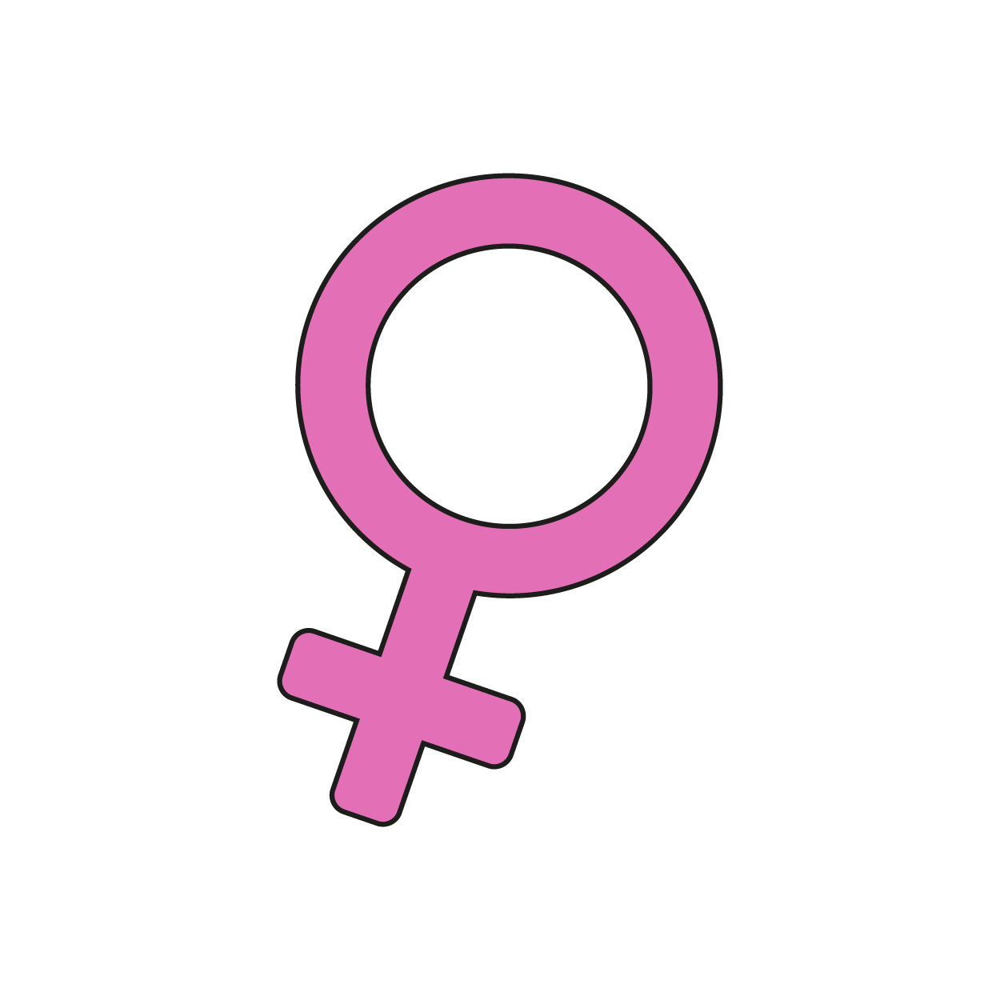
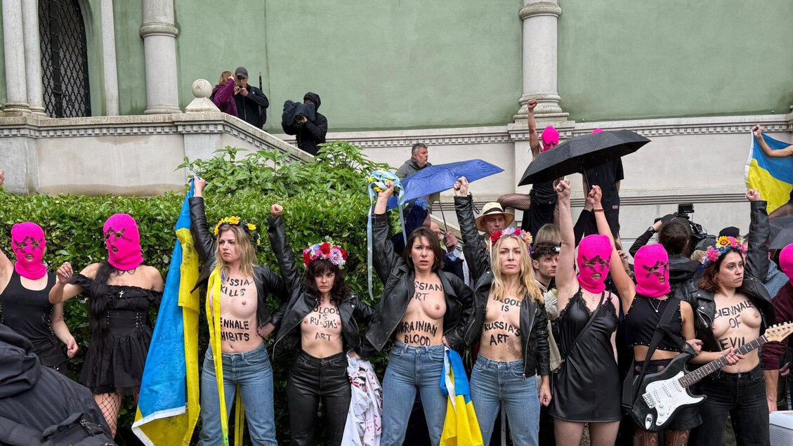
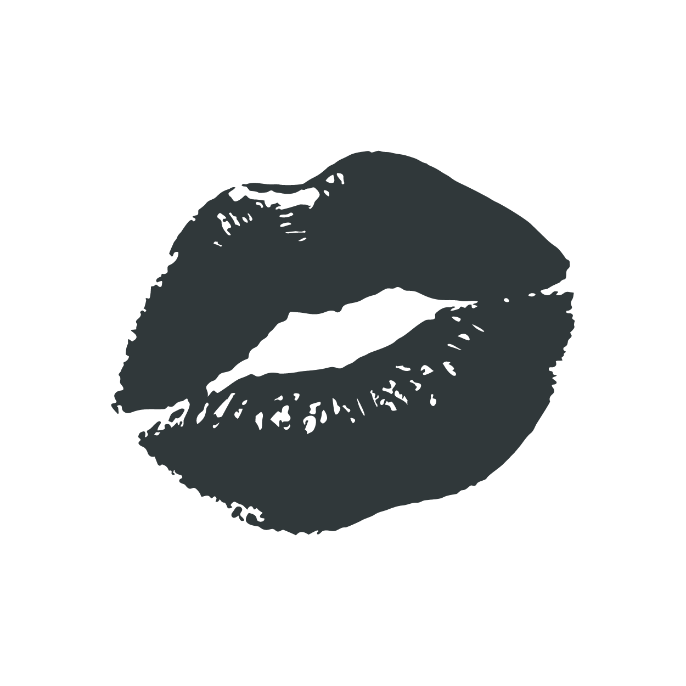
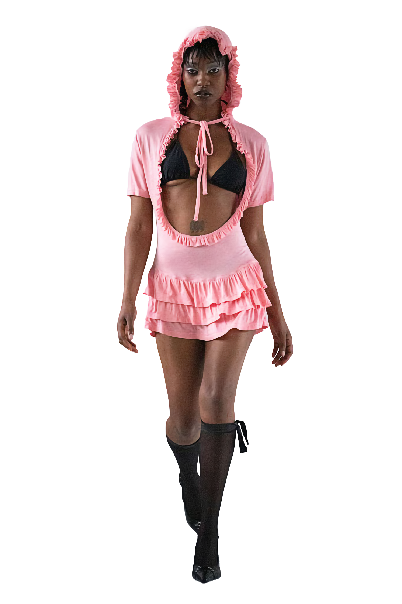
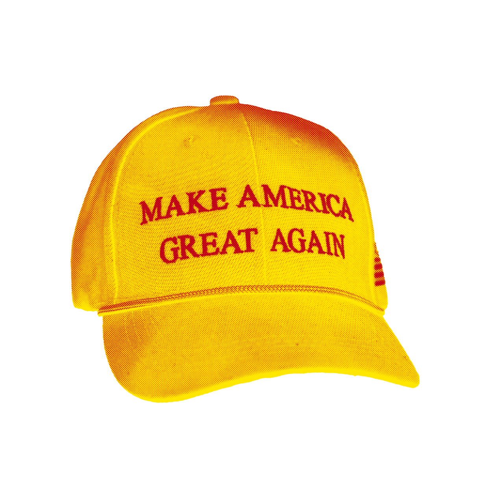
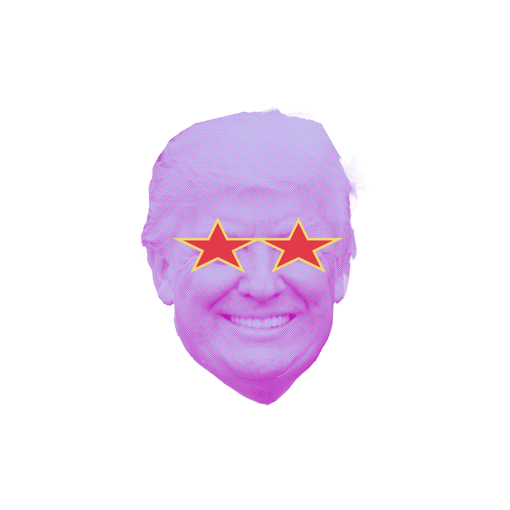
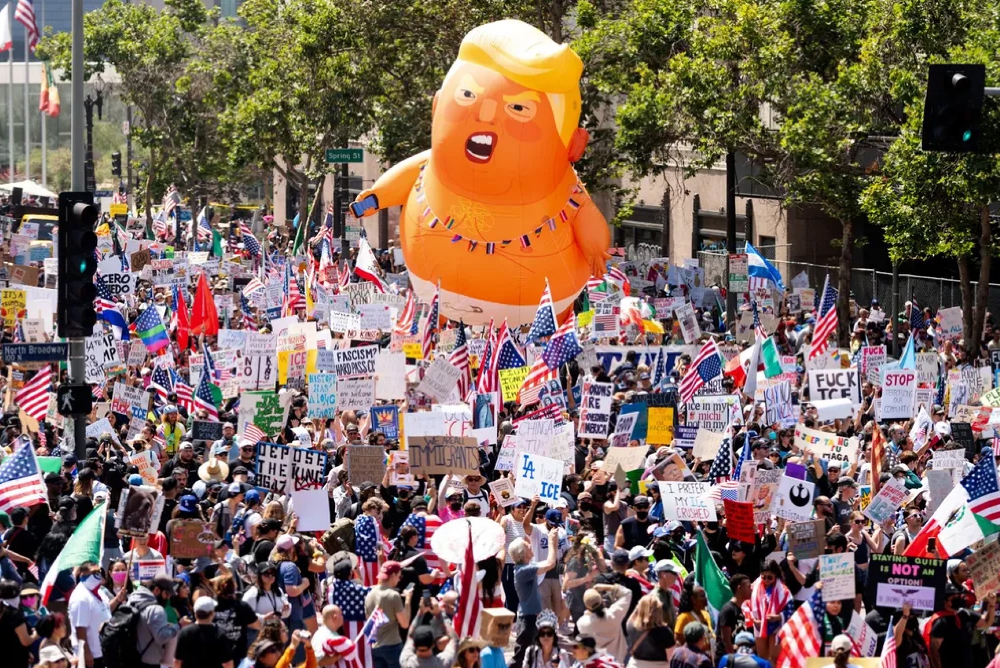
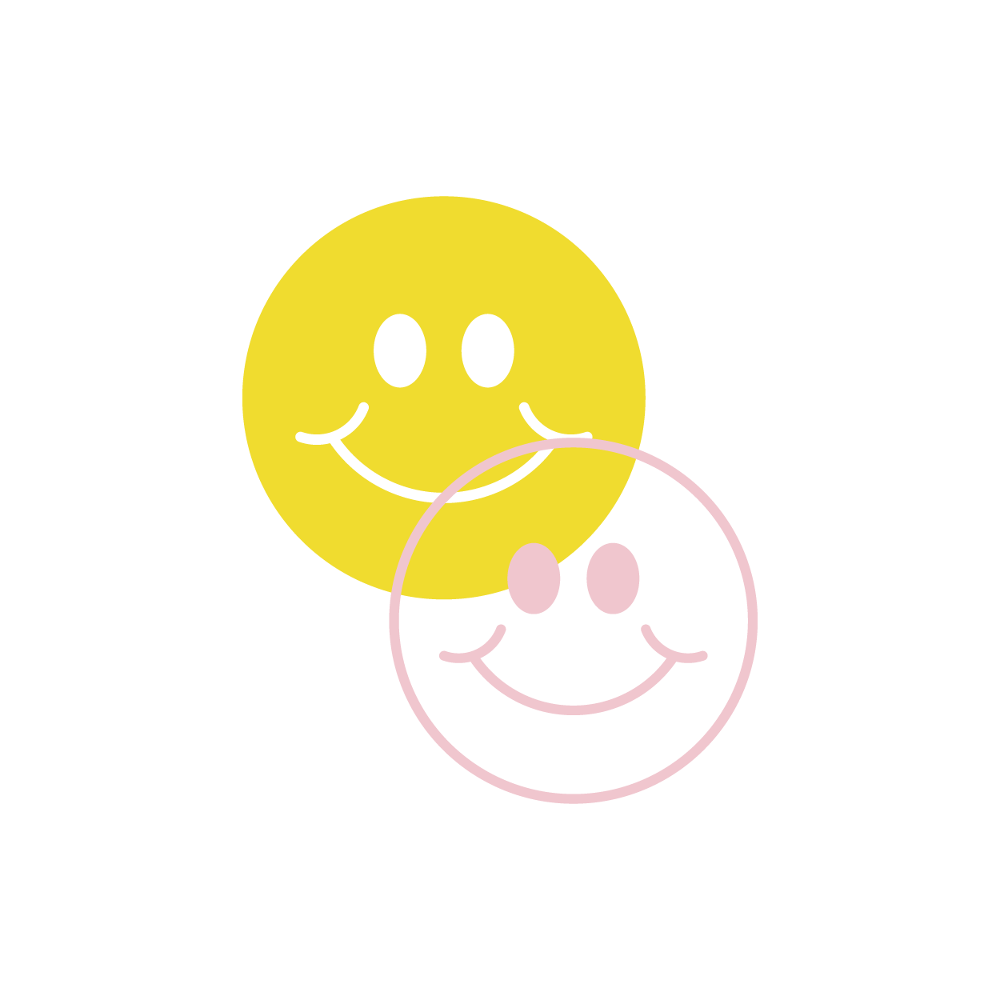
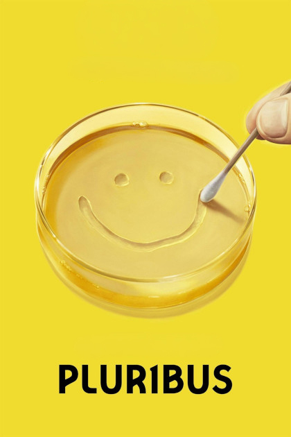

Le azioni performative di Pussy Riot durante la Biennale Arte 2026 trasformano lo spazio espositivo in un territorio di collisione tra spettacolo, dissenso e cultura visuale contemporanea. Nato a Mosca nel 2011 come collettivo femminista punk e anti-autoritario, Pussy Riot ha sempre utilizzato il linguaggio della performance come strumento di sabotaggio simbolico contro le strutture del potere politico, mediatico e patriarcale.


Maschere colorate, passamontagna fluo, materiali sintetici, superfici plastiche e oggetti inflatable costruiscono un'estetica volutamente infantile e pop. I colori baby (rosa acidi, verdi artificiali, gialli saturi) contrastano violentemente con il contenuto delle azioni: guerra, censura, controllo dei corpi, repressione statale.
Questo capo si inserisce in una ricerca contemporanea che usa il kitsch, il gioco e la regressione visiva come strumenti critici.


Il rosa candy, le balze e il cappuccio arricciato richiamano il linguaggio delle bambole ma viene applicato a una silhouette adulta e ipersessualizzata. Questo contrasto crea una tensione tra innocenza e controllo, tra gioco e spettacolarizzazione del corpo. L'estetica toy-like non semplifica il contenuto, ma lo rende più disturbante: trasforma il corpo in un simulacro glossy, una mascotte emotiva attraverso cui il potere estetizza desiderio, consumo e controllo.
Le manifestazioni del 2025 nate negli Stati Uniti contro Donald Trump trasformano la protesta politica in una gigantesca scenografia pop, dove ironia, teatralità e cultura visuale diventano strumenti di opposizione collettiva.



Il movimento, sviluppatosi come risposta simbolica alla deriva autoritaria e alla personalizzazione spettacolare del potere, utilizza il linguaggio della caricatura per desacralizzare la figura del leader politico. Corone oversize, palloncini giganti e costumi volutamente grotteschi costruiscono un immaginario che oscilla tra parata carnevalesca e distopia contemporanea. Il potere viene ridotto a mascotte, balloon caricaturale, personaggio da meme.
In Pluribus, il gioco assume la forma di un sistema di regole invisibili che organizza comportamento, percezione e partecipazione collettiva. I personaggi sembrano muoversi all'interno di un playground sociale governato da logiche superiori, dove il confine tra spontaneità e controllo viene continuamente manipolato.



L'universo estetico di Pluribus lavora su ambienti controllati che evocano una quotidianità troppo perfetta per essere autentica. Le geometrie semplici, le architetture morbide e la pulizia quasi pubblicitaria dell'immagine costruiscono un'atmosfera che ricorda i mondi simulati dell'intrattenimento per bambini: spazi sicuri solo in apparenza, dietro cui emerge una tensione costante.